JavaScript
JavasScript es la electricidad y las tuberías con válvulas, lo que hace que las cosas reaccionen, cambien, calculen, respondad a lo que hace el usuario.
La diferencia fundamental con HTML es que es un lenguaje de marcado, describe, no decide.
En cambio JavaScript es un lenguaje de programación de verdad, tiene lógica, toma decisiones, repite acciones, guarda y transforma datos.
¿Dónde vive JavaScript?
A diferencia de HTML que solo existe en el navegador, javascript puede correr en: el navegador, o un servidor con Node.js
Variables y tipos de datos
Los tipos de datos que JavaScript maneja son:
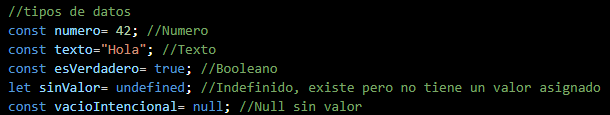
Datos "Compuestos"
Son estructuras que se agrupan varios valores juntos, y son justo los que más se usan
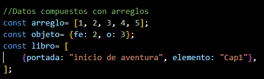
Tipo Dinámico
Además también, una misma variable puede cambiar de tipo durante la ejecución
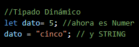
Esto es cómodo, pero tambnién es la razón de un bug clásico, ya que los input de HTML siempre entregan un String sin importar el type que tengan configurado, javascript no lo convierte automaticamente por ti.
Regla del Operador
El operador + en JavaScript tiene doble uso: si ambos lados son number hará una suma matemática y si al menos uno de los dos lados es String hace concatenación "pegar textos".
Sirve para sumar número y pegar textos, JavaScript decide cuál hacer según el tipo de dato, no según lo que tú querías matemáticamente, siempre que mezcles datos que podrían venir de un input conviertelos primero a numeros.
cuando es la regla de -, *, / fuerzan la conversión a número a diferencia de +, ya que estos operadores solo sirven para matemáticas.
Si el texto no se puede convertir a un número válido, en vez de dar error, te da un valor especial llamado NaN (Not a Number), cuando el texto esta vacio lo toma como cero.
Operadores
- === compara valor y tipo
- == solo compara valor
- !== diferente estricto
- > mayor que
- < menor que
- >= mayor o igual
- <= menor o igual
Operadores lógicos
- && "y, and" ambas condiciones deben ser verdaderas
- || "o, or" al menos una condición debe ser verdadera
- ! "no, not" invierte el valor true se vuelve false y viceversa
Condicionales
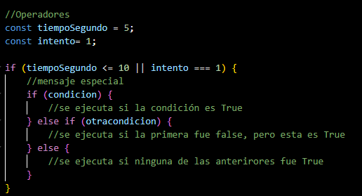
Switch
Cuando tienes muchas comparaciones contra el mismo valor un switch puede ser más legible que una cadena larga de else if, por ejemplo imagina que quieres mostrar un mensaje distinto según el tipo de reacción que el estudiante identificó:
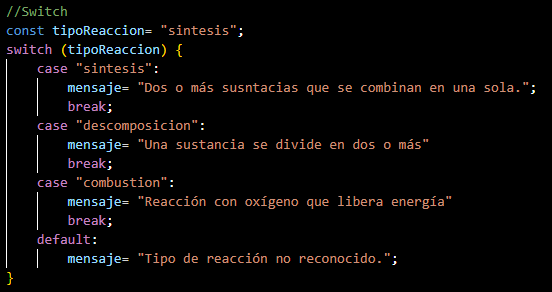
- Switch: variable que se compara una sola vez
- case "Valor": Cada posible valor que quieres revisar
- tipoReaccion: Coincide con ese valor exacto (comparación tipo ===, estricta), ejecuta ese bloque.
- break: Muy importante le dice a JavaScript ya terminé con este caso sal de Switch, si se te olvida, JavaScript sigue ejecutando el case siguiente también, aunque no coincida esto se llama (Fall through) y es un error común.
- Default: El equivalente al else final, se ejecuta sin ninguna case.
Bucles
Los bucles o ciclos son una herramienta más poderosa en JavaScript, imagina que tienes que imprimir los números del uno al cien, escribir cada uno sería una locura, un bucle hace ese trabajo pesado por ti automáticamente.
En JavaScript, los bucles se dividen en dos grandes categorías:Bucles clásicoas (controlados por contador) y bucles modernos para recorrer listas.
El Bucle "for" el clasico
Es el más usado cuando sabes cuántas veces quieres que se repita algo, su estructura tiene tres partes separadas por punto y coma.
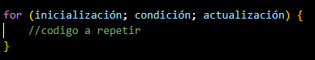
- Inicialización: Se ejecuta una sola vez al principio (let i= 0).
- Condición: Se evalúa antes de cada vuelta, si es true el bucle sigue y si es false se detiene.
- Actualización: Se ejecuta al final de cada vuelta (i++ 1).
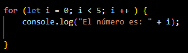
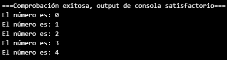
Bucle while (mientras)
Se usa cuando No sabes cuántas veces se va repetir, pero sabes que debe seguir mientras se cumpla una condición.
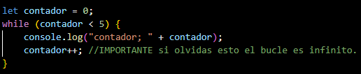
Si el bucle nunca se vuelve falsa, tu programa se congelará (bucle infinito).
Bucle do....while (haz mientras)
Es casi igual a while, pero con una diferencia clave, siempre se ejecuta al menos una vez, porque la condición se evalúa despues de ejecutar el código.
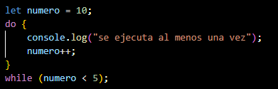
Bucles para recorrer listas (Arreglos)
for....of (el recomendado para listas)
Aquí es donde JavaScript moderno brilla, si tienes una lista de array, estos son los bucles que debes usar.
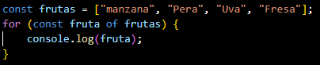
for...in (para objetos)
Este bucle recorre las claves (propiedades) de un objeto, no se usa para array.
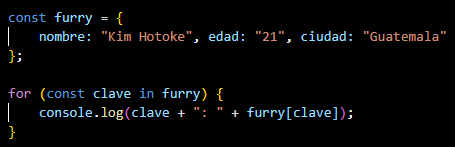
.forEach (método de arreglo)
Es una función que se ejecuta por cada elemento de la lista, es muy usado en React y código moderno.
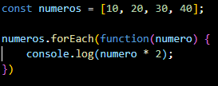
Control de bucles
A veces se necesita interrumpir un bucle antes de que termine.
break
Detiene el bucle por completo.
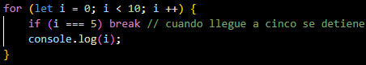
continue
Salta a la siguiente vuelta, ignorando el resto del código para esa iteración.
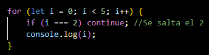
Bucles anidados
Se pueden poner bucles dentro de otro bucle, se usan para matrices o tablas.
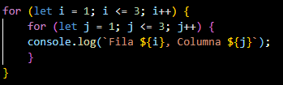